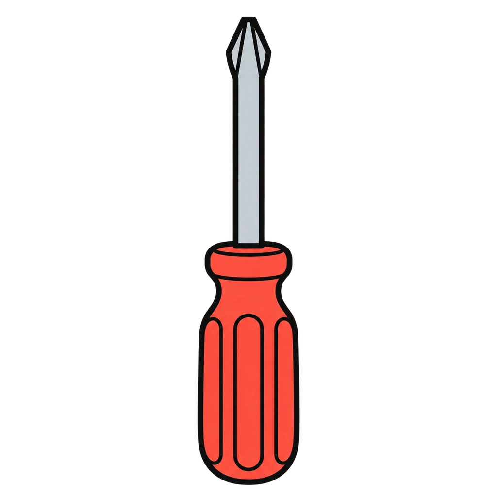
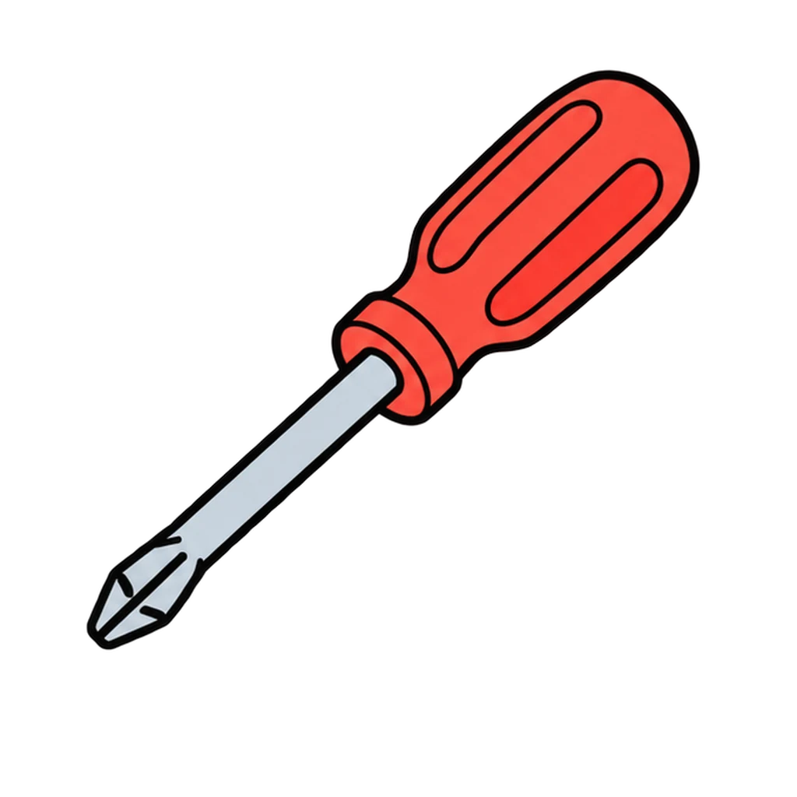
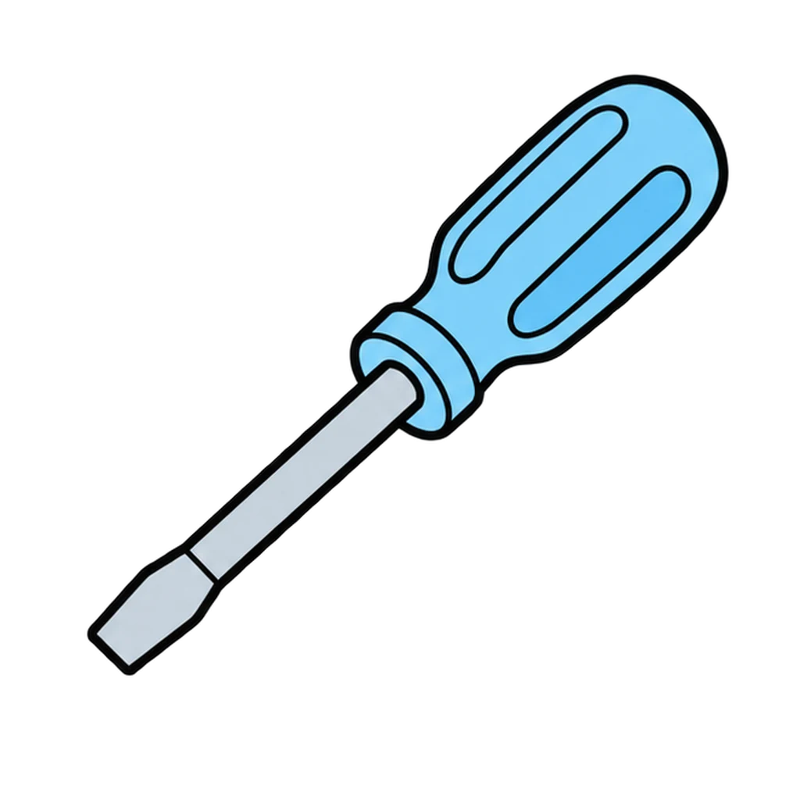
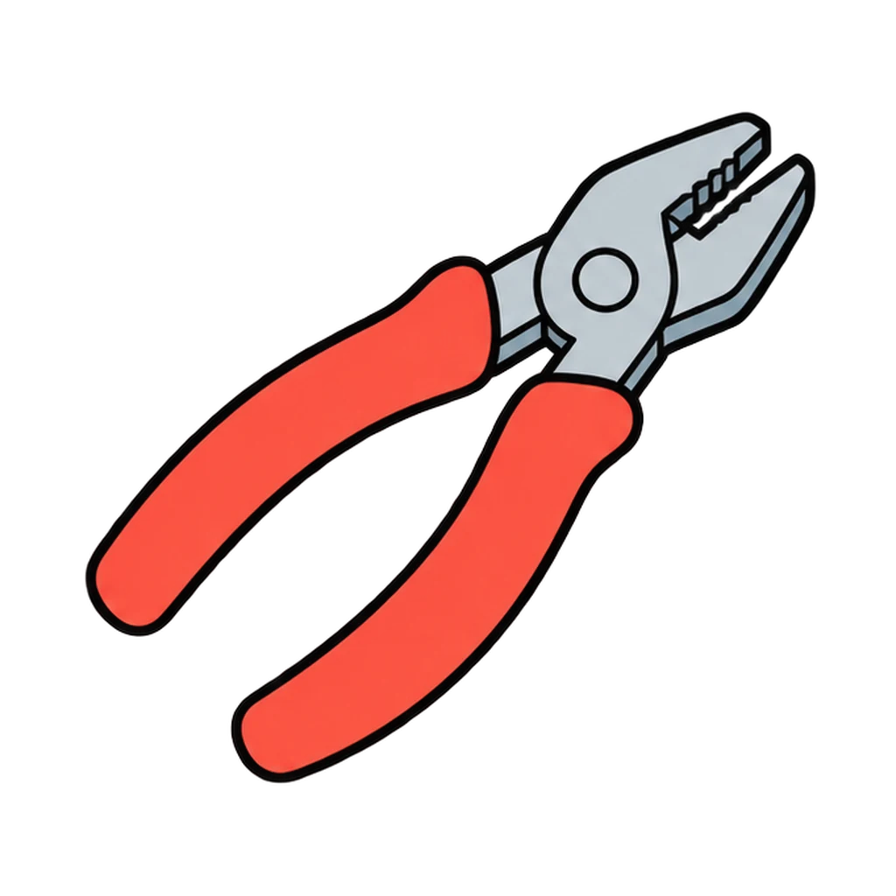
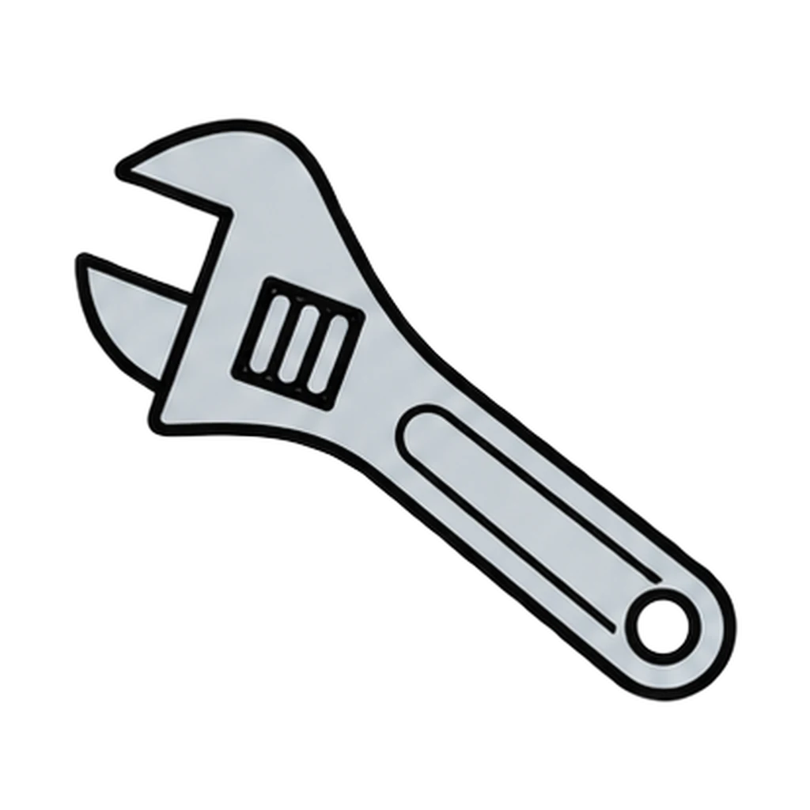
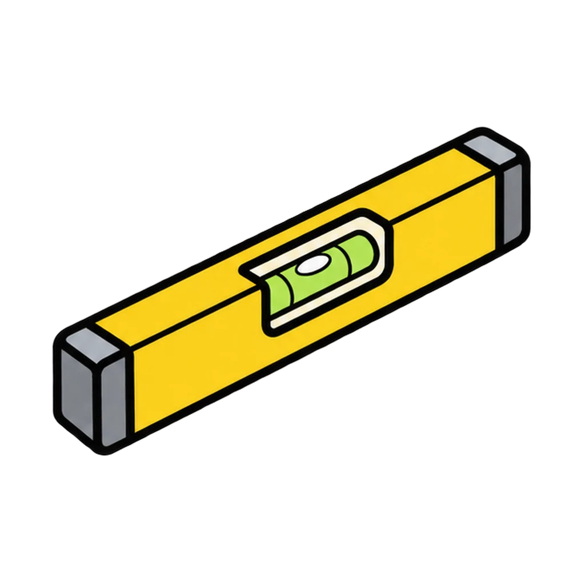
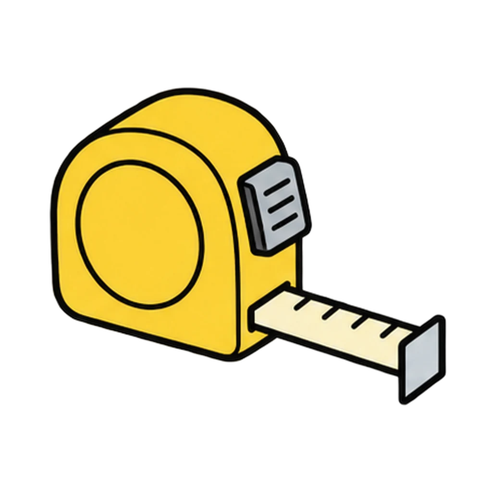
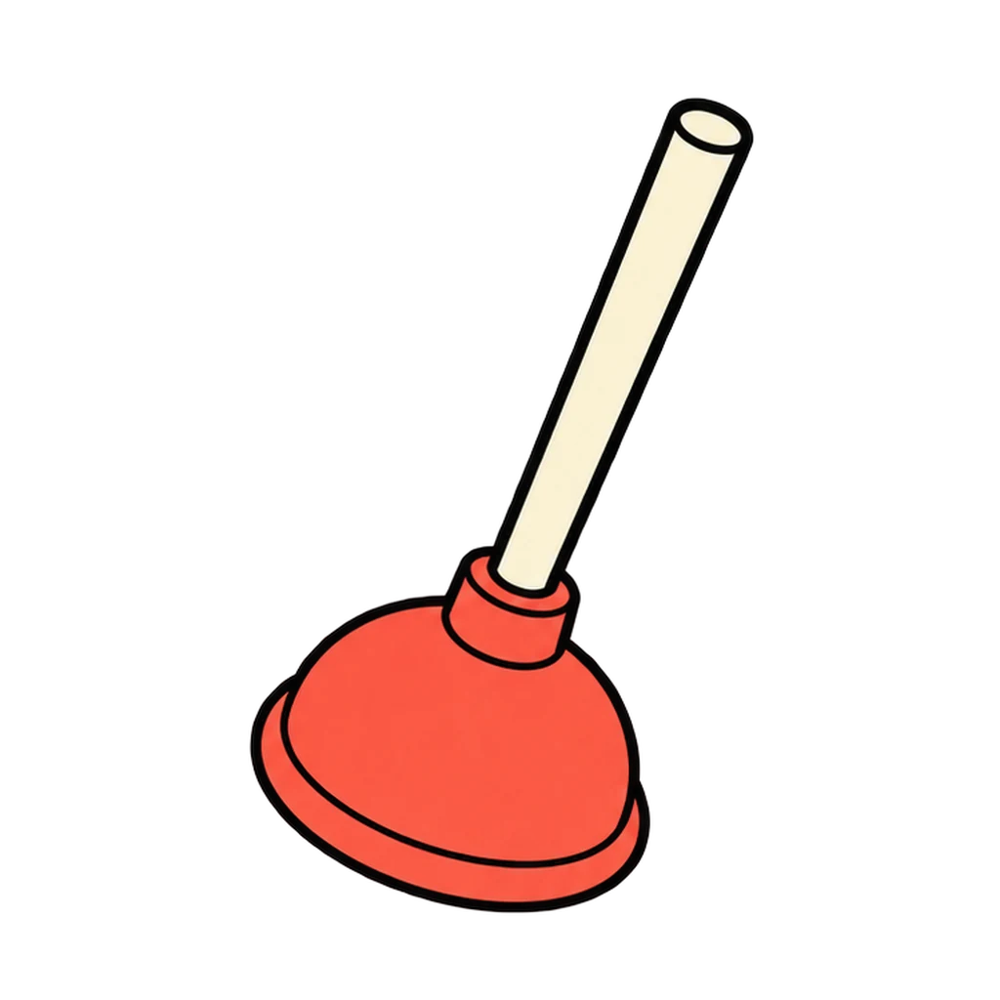
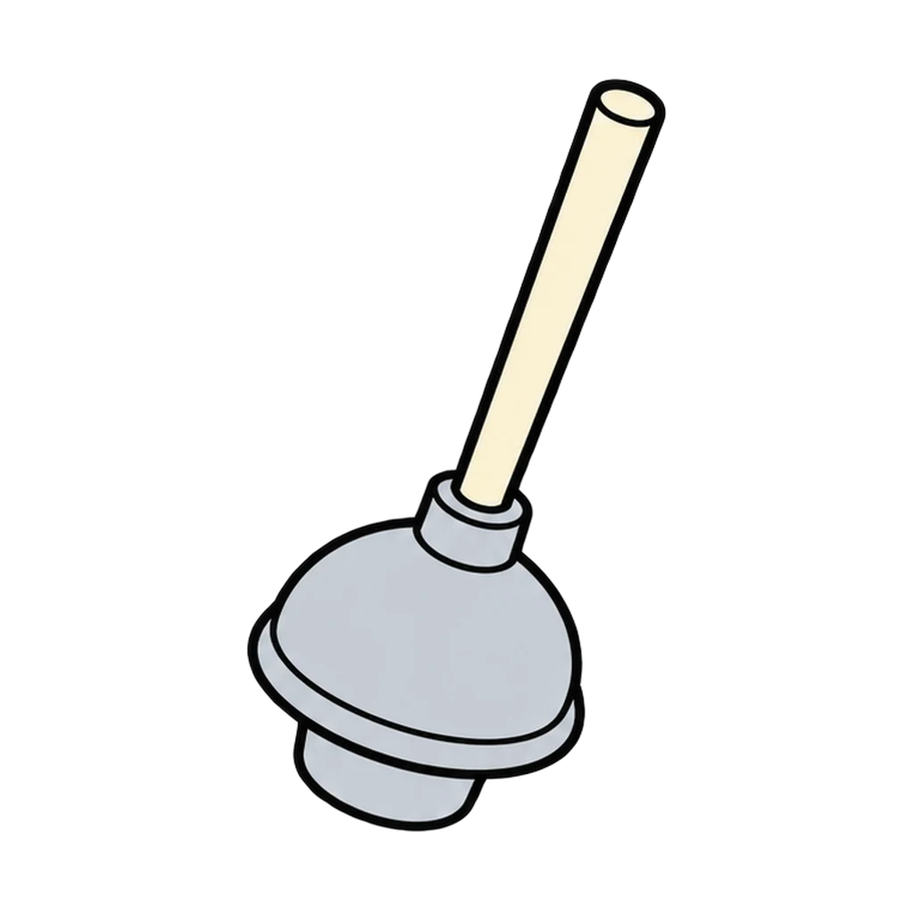

Reviews Lesson 4.3. Reviews Lesson 4.3: the seven tools from the tool tray and the step sequences on the station cards, including the six-step troubleshooting process that is the Day 2 exit card. Use it as the Day 2 do now in place of the three name-the-tool prompts, or as the retake review for the breaker and drain items on the Home Safety and Conservation Quiz. About three minutes. The end panel lists the four station safety rules.

Fix It Kit
A tool picture appears. Tap its name, then tap the tool for a job. Then four step sequences from the station cards appear shuffled, and you tap the cards into the right order.
How to play








Done
The ones to study:
Worth knowing by heart:
- Safety: safety glasses on. Fingers behind the screw, never in front of the tip.
- Never mix chemicals; never plunge after chemicals.
- At home, a breaker panel is the one place you never put a wet hand or a tool.
- Filter: find the arrow (points toward the furnace); switch the system off first.